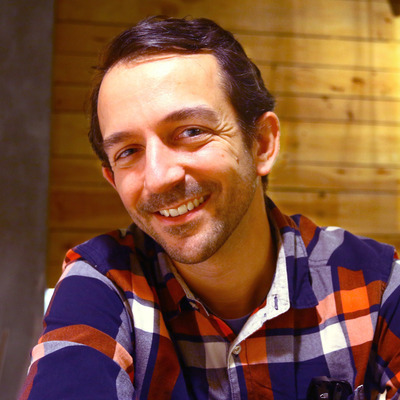

Workshops
R101: Introduction to R for Clinical Data
WORKSHOP

A gentle introduction to R and data science for healthcare professionals and clinical researchers.
Promover la Equidad Científica: Introducción a R
WORKSHOP


Este taller ofrece una introducción práctica al uso de R para el análisis de datos en investigación médica y en salud. Está dirigido a profesionales de la salud, investigadores clínicos y estudiantes sin experiencia previa en programación. A lo largo del taller, los participantes aprenderán los conceptos básicos de R, cómo trabajar con bases de datos, realizar análisis descriptivos y generar resultados reproducibles.
Mastering Clinical Data Summaries with {gtsummary} and AI
WORKSHOP

As the pharmaceutical field moves to open-source solutions for reporting on clinical trials, assessing and vetting the options available becomes increasingly important. The {gtsummary} R package is the most widely used tool in the R ecosystem for creating publication-ready summary tables. Its recent integration with the Analysis Results Dataset (ARD) framework represents a major advance for clinical trial reporting. ARDs, which standardize statistical outputs in a machine-readable format, can be robustly generated using the open-source {cards} package developed by Roche, GSK, Novartis, Eli Lilly, Pfizer, and Clymb.
In this seminar, attendees will learn about ARDs and how can fit into the larger CDISC-proposed Analysis Results Standard, get hands-on experience using {cards} to build ARDs for both simple and complex statistical summaries, create summary tables using the {gtsummary} package, and learn how utilizing these packages together also makes programmatic quality control of TLGs a simple task.
Lastly, we will review how this ecosystem naturally lends itself to Large Language Models (LLMs). Because {gtsummary} is so widely adopted, LLMs can generate complex {gtsummary} code without additional training. Additionally, LLMs can readily interpret our structured ARDs to assist medical writers summarizing both simple and sophisticated trial results.
Working with Larger than Memory Data in R
WORKSHOP

As datasets continue to grow in size and complexity, R users increasingly encounter data that exceeds their system’s memory capacity. This hands-on workshop provides practical strategies for efficiently analyzing larger-than-memory datasets using modern open source tools, with a focus on DuckDB and Apache Arrow—all while maintaining familiar tidyverse workflows.
Participants will learn when and why to move beyond traditional in-memory data frames, and how to choose the right tool for their specific data challenges. Through a combination of presentation and hands-on exercises, we’ll explore how DuckDB enables SQL-based analytics on large datasets without loading them entirely into memory, and how Arrow provides a high-performance columnar data format for efficient data interchange and processing. We’ll also introduce duckplyr, which brings DuckDB’s performance optimizations directly to your existing dplyr code with minimal syntax changes.
The workshop covers essential workflows including reading and querying large CSV and Parquet files, performing aggregations and joins on data that won’t fit in RAM, and leveraging duckplyr to accelerate familiar tidyverse operations on larger datasets. Participants will gain practical experience through real-world examples and learn decision frameworks for selecting appropriate tools based on data size, query patterns, and performance requirements—all without abandoning the tidyverse syntax they already know.
Attendees should have basic familiarity with R and the tidyverse. By the end of this 3-hour session, participants will be equipped with reproducible techniques to confidently tackle larger datasets in their own research and data analysis workflows.
ggplot2 for Data Visualisation: Creativity, Clarity, Accessibility
WORKSHOP
This workshop is designed for ggplot users who know how to make basic graphs, but want to make them look better and save themselves precious time by building reuseable components. We’ll explore how to choose the right graphs for different aspects of our data story and how to apply a consistent style across them. In doing so, we will focus on making design choices which are accessible, and on making the most of new ggplot2 features. Because getting from a static graph to an interactive one is much easier than most people realise, we’ll finish by exploring how to link two or more interactive graphs together to allow users to explore different aspects of a data story. This is a code-along workshop, so bring your own data and graphs, and we’ll make something fun together!
LLMs for Data Analysis in R
WORKSHOP

LLMs are transforming how we write code, build tools, and analyze data. This workshop will introduce participants to programming with LLM APIs in R using ellmer, an open-source package that makes it easy to work with LLMs from R. We’ll cover the basics of calling LLMs from R, system prompt design, tool calling, and evaluation, and show how to use LLM-powered tools to support common data analysis tasks like exploratory data analysis. Participants will leave with example scripts they can adapt to their own data analysis projects.
R Packages for Personal Use with GitHub
WORKSHOP

Panels
R and RedCap Panel Discussion
PANEL
Demos
Building Accessible, On-Brand Documents with Quarto
WORKSHOP

Come see practical strategies for producing Quarto documents that meet organizational standards for both design and accessibility. You’ll learn how to implement consistent organizational branding using brand.yml, plus customization techniques for cases where you need more control. You’ll also learn about recent accessibility improvements for both PDF and HTML outputs.
Ctrialsgov R Package
WORKSHOP